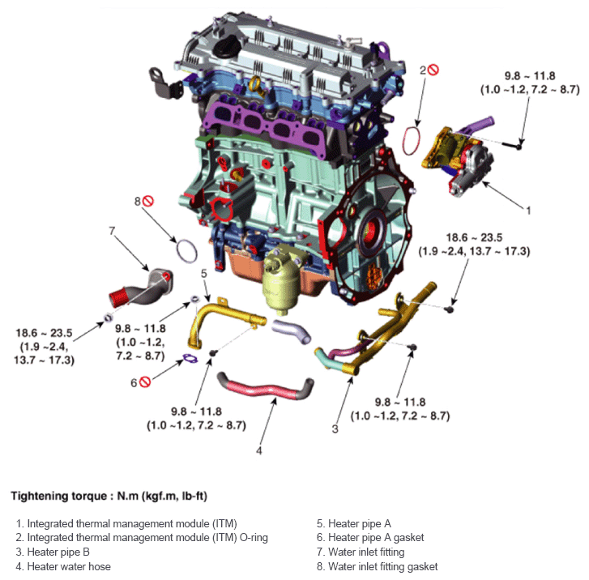

LEMON Manuals
: Even more car manuals for everyone: 1960-2025
Home
>>
Hyundai
>>
2022
>>
Elantra N Line, Standard Trans
>>
Repair and Diagnosis
>>
Engine Performance
>>
Engine Control Systems
>>
Engine Control System - 1.6L (Except HEV)
>>
Integrated Thermal Management Module (ITM)
>>
Components And Components Location
>>
Components
Components And Components Location: Components
Fig 1: Integrated Thermal Management Module Components Location With Torque Specification

Courtesy of HYUNDAI MOTOR AMERICA
Tightening torque: N.m (kgf.m, lb-ft)